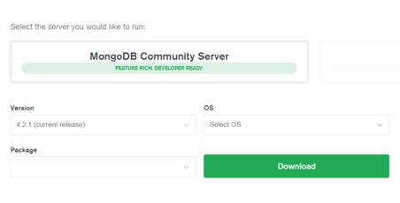
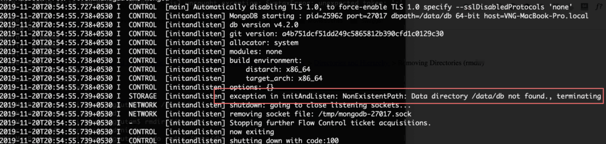

MongoDB is one of the most popular NoSQL databases today. It is a core part of MEAN and MERN stacks that are used for web application development. MongoDB stores data in key-value pairs represented as JSON structure in objects.
These objects are known as documents. These documents, are in, turn stored in dynamic collections. And collections are stored in a MongoDB database. We will discuss more about MongoDB documents and collections, but first, we will go through installation steps.
To install MongoDB in windows, open a browser and go to the following link.
//www.mongodb.com/download-center/community?jmp=docs.
You can find something like this on the screen.
Select the latest version of MongoDB and your Windows OS. You will have two package options. Select the MSI option. Then, click the download button. It will download a .msi package. Open it after the download is complete and go through the installation steps.
By default, MongoDB will be installed in the C drive. Open the C:/Program Files folder/MongoDB/Server folder . Open it. In this folder, you will find yet another folder. In my case, the name of the folder is “4.2”. Folder name depends upon the version you have downloaded. Open this folder and you will find a few other folders and files. Open the folder named “bin”. The file we need to start MongoDB is present in this folder. The name of this file is “mongod”.
Open a terminal and go to the path where mongod file resides and then type “mongod”
And it won’t work. Check the exception that it throws in the above image. It says we need a directory for storage in this path “C:\data\db\”. So, create this path with proper permission(Read and Write) and then again run the “mongod” command. Now the server will start listening on port 27017.
Documents in MongoDB are stored in collections. Collections in MongoDB are similar to tables in SQL. There can be any number of documents in a single collection. Collections, in turn, are stored in a database. Similar to tables in SQL that are also stored in a database. As there can be any number of tables in a single database, there can be any number of collections in a database.
So let’s discuss how to create all these in MongoDB.
First of all, we need to start the mongo shell. Remember, earlier, we used the mongod command to run MongoDB? Open a terminal and start the terminal again. After that, open another terminal and go to the same path – “C:\Program Files\MongoDB\Server\4.2\bin”. This is the path in my machine. “4.2” can vary depending upon the version of MongoDB installed in your device.
Type “mongo” and press enter. It will start the mongo shell. But do not close the terminal where MongoDB is running.